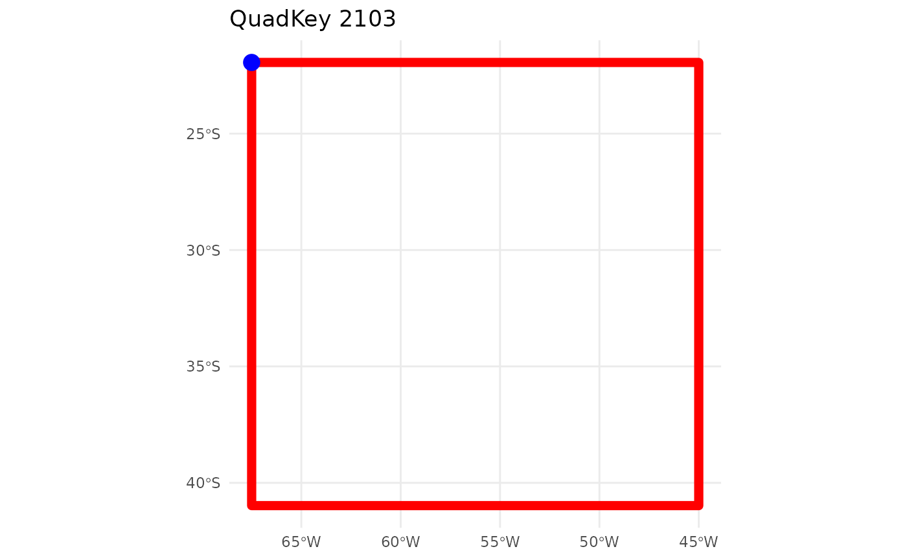

From a QuadKey to a Simple Features data.frame and other conversions
Florencia D’Andrea
2024-02-22
Source:vignettes/quadkey_to_sf_conversion.Rmd
quadkey_to_sf_conversion.RmdPlease, visit the README for general information about this package
Most of the function and arguments names conserved from the
documentation. quadkeyr functions are the R version of the
ones described in Bing
Maps Tile System webpage.
1 Basic workflow

You can convert any QuadKey to a Simple
Features object sf POINT data.frame or sf
POLYGON data.frame using the functions quadkey_to_latlong()
and quadkey_to_polygon(). It’s important to notice that the
geographic coordinates of the point will always correspond to the
upper-left corner of the polygon for the same QuadKey.
qtll <- quadkey_to_latlong(quadkey = "2103")
qtll
#> Simple feature collection with 1 feature and 1 field
#> Geometry type: POINT
#> Dimension: XY
#> Bounding box: xmin: -67.5 ymin: -21.94305 xmax: -67.5 ymax: -21.94305
#> Geodetic CRS: WGS 84
#> quadkey geometry
#> 1 2103 POINT (-67.5 -21.94305)
qtp <- quadkey_to_polygon(quadkey = "2103")
qtp
#> Simple feature collection with 1 feature and 1 field
#> Geometry type: POLYGON
#> Dimension: XY
#> Bounding box: xmin: -67.5 ymin: -40.9799 xmax: -45 ymax: -21.94305
#> Geodetic CRS: WGS 84
#> quadkey geometry
#> 1 2103 POLYGON ((-67.5 -40.9799, -...
ggplot() +
geom_sf(data = qtp, color = 'red', fill = NA, linewidth = 2.5) +
geom_sf(data = qtll, color = 'blue', size = 4) +
ggtitle(paste("QuadKey", qtll$quadkey)) +
theme_minimal()
If you want to convert a data.frame quadkey column to a
sf POLYGON data.frame. you can use the function
quadkey_df_to_polygon() described in the ‘Generating
a Raster Image from Quadkey-Identified Data’ vignette
2 Advanced use: intermediate functions
The conversion from QuadKey to geographic coordinates involves a
series of smaller transformations that relate to the structure of Tile
Maps. All of these intermediary functions, as well as those facilitating
the reverse conversion, are available for use within the
quadkeyr package.
2.1 Tile Maps: QuadKeys, tiles, pixels and geographic coordinates
Note: In the official documentation, the term ‘level of detail’ is equivalent to what is here referred to as ‘zoom level’.
Tile maps are composed of pixels that are grouped into tiles. Later, the tiles are converted to QuadKeys to optimize map performance, among other benefits described in detail in the documentation.
Pixels and tiles are expressed as two-dimensional coordinates -
(pixelX, pixelY) and (tileX,
tileY) - but Quadkeys are one-dimensional numeric strings.
This is important to understand how the conversion works.
Each geographic pair of coordinates (latitude/longitude) will belong
to a specific pixel referenced by coordinates (pixelX,
pixelY) for each zoom level. In Fig. 1, you can see pixels
(0, 0) and (2047, 2047) for zoom level 3. The quadkeyr
function latlong_to_pixelXY(), converts geographic
coordinates (latitude/longitude) in pixel coordinates for each zoom
level.
Fig 1. Pixels (0, 0) and (2047, 2047) for a map with zoom level 3. Image extracted from Microsoft’s Bing Maps Tile System webpage.
In turn, a tile is comprised of 256x256 pixels. The tile coordinates are visually represented in Fig. 2. These coordinates will ultimately be converted into one-dimensional QuadKeys.
For instance, a pixel for zoom level 3 represented by the coordinates
pixelX = 255 and pixelY = 12 is part of the
tile with coordinates tileX = 0 and tileY = 0.
The pixel with coordinates (0,0) belongs to tile (0,0), and the pixel
(2047, 2047) is part of tile (7,7). You can verify this using the
function pixelXY_to_tileXY() and by comparing Fig. 1 and
Fig. 2.

Fig 2. Tile coordinates. Image extracted from Microsoft’s Bing Maps Tile System webpage.
To convert from tile XY coordinates to QuadKeys for a particular zoom
level, you can use the function tileXY_to_quadkey(). The
number of digits of the QuadKey will correspond to the zoom level of the
map. For example, for the tile (4, 7) of zoom level 3, the QuadKey will
be 322.
This pertains to the conversion from geographic coordinates (latitude/longitude) to QuadKeys. However, when converting in the opposite direction, from QuadKeys to geographic coordinates (latitude/longitude), the final pair of latitude/longitude corresponds to the upper-left corner coordinates of the tile and pixel associated with your original QuadKey.
To understand this in more detail, have a look to the functions and then read section 3.
2.2 If you have a pair of geographic map coordinates, convert them to a QuadKey
Geographic coordinates → pixel XY coordinates → tile XY coordinates → QuadKey
Note: The latitude and longitude coordinates are in the WGS 84 reference system.
2.2.1 Convert latitude/longitude coordinates to pixel XY coordinates
lltp <- latlong_to_pixelXY(lat = -25,
lon = -53,
zoom = 4)
lltp
#> $pixelX
#> [1] 1445
#>
#> $pixelY
#> [1] 23422.2.2 Convert pixel XY coordinates into tile XY coordinates
ptt <- pixelXY_to_tileXY(pixelX = lltp$pixelX,
pixelY = lltp$pixelY)
ptt
#> $tileX
#> [1] 5
#>
#> $tileY
#> [1] 92.2.3 Convert tile XY coordinates into a QuadKey
This function returns the QuadKey string. Since we are estimating zoom level 4, the number consists of 4 digits.
tileXY_to_quadkey(tileX = ptt$tileX,
tileY = ptt$tileY,
zoom = 4)
#> [1] "2103"2.2.4 Direct conversion from geographic coordinates to one or more QuadKeys

The function latlong_to_quadkey() wraps the last three
functions, and converts map coordinates into a QuadKey for a particular
zoom level:
latlong_to_quadkey(lat = -25,
lon = -53,
zoom = 4)
#> Simple feature collection with 1 feature and 1 field
#> Geometry type: POINT
#> Dimension: XY
#> Bounding box: xmin: -53 ymin: -25 xmax: -53 ymax: -25
#> Geodetic CRS: WGS 84
#> quadkey geometry
#> 1 2103 POINT (-53 -25)This function also work for multiple coordinates:
latlong_to_quadkey(lat = c(-4, -25.33, -25.66),
lon = c(-53, -60.33, -70.66),
zoom = 4)
#> Simple feature collection with 3 features and 1 field
#> Geometry type: POINT
#> Dimension: XY
#> Bounding box: xmin: -70.66 ymin: -25.66 xmax: -53 ymax: -4
#> Geodetic CRS: WGS 84
#> quadkey geometry
#> 1 2101 POINT (-53 -4)
#> 2 2103 POINT (-60.33 -25.33)
#> 3 2102 POINT (-70.66 -25.66)2.3 If you have a QuadKeys, convert them to a pair of map coordinates
Let’s attempt the reverse route.
QuadKey → tile XY coordinates → pixel XY coordinates → Geographic coordinates
2.3.1 Convert a QuadKey into tile XY coordinates
qtt <- quadkey_to_tileXY("2103")
qtt
#> $tileX
#> [1] 5
#>
#> $tileY
#> [1] 9
#>
#> $zoom
#> [1] 42.3.2 Convert tile XY coordinates into pixel XY coordinates
ttp <- tileXY_to_pixelXY(tileX = qtt$tileX,
tileY = qtt$tileY)
ttp
#> $pixelX
#> [1] 1280
#>
#> $pixelY
#> [1] 23042.3.3 Convert pixel XY coordinates into lat/long coordinates
ptll <- pixelXY_to_latlong(pixelX = ttp$pixelX,
pixelY = ttp$pixelY,
zoom = 4)
ptll
#> $lat
#> [1] -21.94305
#>
#> $lon
#> [1] -67.52.3.4 Direct conversion from one or more QuadKeys to geographic coordinates

You can also use the function quadkey_to_latlong() that
wraps the last three functions and returns a sf POINT
data.frame.
quadkey_to_latlong(quadkey_data = "2103")
#> Simple feature collection with 1 feature and 1 field
#> Geometry type: POINT
#> Dimension: XY
#> Bounding box: xmin: -67.5 ymin: -21.94305 xmax: -67.5 ymax: -21.94305
#> Geodetic CRS: WGS 84
#> quadkey geometry
#> 1 2103 POINT (-67.5 -21.94305)
quadkey_to_latlong(quadkey_data = c("213", "212", "210"))
#> Simple feature collection with 3 features and 1 field
#> Geometry type: POINT
#> Dimension: XY
#> Bounding box: xmin: -90 ymin: -40.9799 xmax: -45 ymax: 0
#> Geodetic CRS: WGS 84
#> quadkey geometry
#> 3 210 POINT (-90 0)
#> 2 212 POINT (-90 -40.9799)
#> 1 213 POINT (-45 -40.9799)3 Caveats when converting coordinates
Given the process of converting geographic coordinates (latitude/longitude) to QuadKeys, one might expect that the conversion back to latitude/longitude coordinates (as in section 2.3) would yield the same values as the original input in section 1.
However, this isn’t the case, as evidenced by the results of the
functions pixelXY_to_tileXY() and
tileXY_to_pixel_XY().
When choosing latitude/longitude coordinates in the initial function in section 1, they were within a specific pixel represented by unique tile coordinates and QuadKey. As you can see in the example in this vignette, the conversion back from QuadKey to latitude/longitude does not directly result in the same initial geographic coordinates.
This discrepancy arises because tileXY_to_pixel_XY()
provides the pixel coordinates for the upper-left corner of the tile,
not the exact coordinates chosen initially. For example, if you run
tileXY_to_pixelXY() for the tile XY coordinates are (7, 7),
the resulting pixel XY coordinates are (1792, 1792) and no (2047, 2047)
as you could see in Fig. 2. As each tile is 256x256 pixels, you can
easily check that the result is the upper-left pixel of that tile. The
same will happen for pixelXY_to_latlong().
Hence, converting latitude/longitude coordinates into a QuadKey and then back to latitude/longitude won’t yield identical values, unless the initial latitude/longitude coordinates correspond to the upper-left to the upper-left Quadkey’s pixel and tile XY coordinates at the same zool level.
Consider as initial values the coordinates result of the conversion
from QuadKey to latitude/longitude obtained in section 2.3
(lat = -21.94305, lon = -67.5) and rerun all functions from
the beginning. You’ll proof this way that obtaining the original
geographic coordinates is unlikely unless the initial coordinates
correspond to the upper-left upper-left Quadkey’s pixel and tile XY
coordinates.
Understanding this distinction is crucial for the accurate use of these functions in coordinate conversions.
3.0.1 Additional functions
In addition to the conversion functions mentioned earlier, the
quadkeyr package also includes the following functions:
mapsize(), mapscale(), and
ground_res(). These functions are described on the Bing
Maps Tile System webpage and are available for its use.